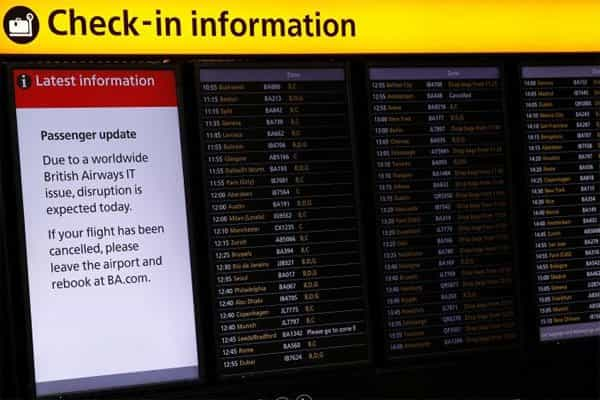
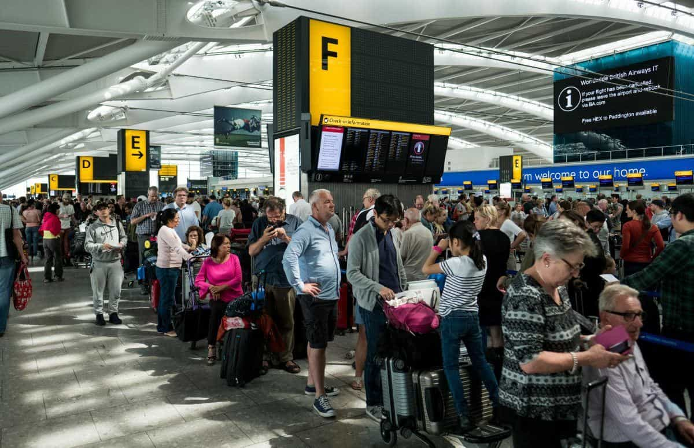

Kyle is an entrepreneur and nomad who has been living abroad since 2016. He blogs at This Is Trouble. Follow him on Facebook.


Last Saturday, I got stuck in London with roughly 100,000 other people because British Airways somehow managed to knock out power to their entire data center.
As someone who used to run a data center, it was laughable. First it was told that they were hacked. Then it was sabotage (they’d recently laid off a good chunk of their Information Technology staff). Then it came out that some dork accidentally pulled the plug and they somehow didn’t have a backup.
However, the point of this post isn’t a technical geekout. With any corporation, customer service is key. A business and it’s entire lifeline goes back to the customer—and if they are or aren’t willing to spend their money with the business. A business that has a major crisis like the British Airways IT meltdown is a business on a lifeline.
They must give their customers a reason to return to them. What is done is done, but it’s what customers choose to do after the incident that makes or breaks a business over the long-term. And, in my humble opinion, British Airways did a pretty poor job at that.
With that being said, here are five customer service lessons any business could utilize that British Airways is learning the hard way.

In this case, the power went out and people were stranded. That’s bad enough as is, right? In my case, I was outbound from Warsaw, Poland to London. My flight in Warsaw was delayed several hours because the systems were down. They told us that in Poland, and told me personally that it was very likely that my second flight from London to Phoenix would be delayed, too.
Inconvenient, but no big deal. Until I got to London.
As it turns out, British Airways flew everybody from outlying cities into London where the root of the problem was. It was mind-boggling. Why not just leave the hundreds of other flights inbound to London from other European countries where they were? I would have much rather been stuck in Poland for an extra night, albeit inconvenient, than get flown into the firestorm in London. Many other passengers on my flight (and other flights) felt the same way.
The lesson: If your business has a fire, put the fire out. Don’t dump thousands of dollars of jetliner fuel on to the fire—that’s basically what BA did in this case.
The real kick in the nuts for BA was that this was on the Bank Holiday Weekend—one of the Heathrow’s biggest travel days of the entire year. Not to mention, lots of people come into London.
It was nearly impossible to get a hotel during the whole fiasco. And with BA’s computers being 100% down, they were unable to book people into hotels, offer vouchers, or do anything. All they could do was stand around and do customer service the old-school way—by handing out flyers.
The flyers said that we would be compensated £200 for hotel rooms, £50 for a taxi round-trip, and £25/day for food.
I literally watched on my phone while waiting in the hour-long taxi queue as the prices for the hotels jumped from £200 to £700 in a matter of minutes.
BA is refusing to cover my entire costs, which ended up being £219 for a hotel, £75 for a taxi one way (I took the Underground back the next morning), and £33 for food.
Now, at the end of the day the difference is not even £50. I’m not going to bother to continue to fight them, but it doesn’t make sense to nickel and dime people. Sure, thousands of people each wanting to claim and extra £50 can and will add up quickly. However, covering that extra little bit would put goodwill in people instead of anger.
The lesson: Try to make things right, no matter the cost. Nickel and diming may save you a good chunk of change in the short term but will bring ever-lasting anger to customers that will hurt your bottom line in the long run. That extra £50 might be the difference between them flying BA or not next time. Speaking of next time…

Even as BA tries to recover from this, there’s now going to be a strike coming up later this month. I don’t know the full details, but apparently a good majority of their flight attendant staffing will be striking for four days sometime in June.
Can you imagine the uproar that will occur if people are caught in a 24 hour+ delay a second time? It’ll be an entire new week of bad press, social media fury, and general distaste toward’s Britain’s most well-known (and formerly most prestigious) airline.
The lesson: You’re going to screw up in life. It’s inevitable. It’s how you bounce back from those mistakes that will determine how you (or a company) turn out. At this point, BA should pay those flight attendants whatever they want so that a strike doesn’t occur.
Typical consumer
As we’ve seen repeatedly in the last few months, much of mainstream news is fake. They have a set agenda, and the entire network is scripted around said agenda. But, as we’ve also seen—individual journalism and media is rising.
I saw dozens of people Periscoping and streaming on YouTube while they were waiting for their flights, hotels, or just trying to figure out what the hell was going on. All it takes is a “somebody” sharing the story of a “nobody” and things can get viral and spiraled out of control.
The new age of technology has now given everybody the questionable ability to be a reporter by birthright. I don’t envy the big corporations that have to deal with it, including BA. If you scroll through their Twitter feed though, BA has just given generic answers to everyone—to much outrage.
The lesson, and closing thoughts: Sometimes, all it takes is a little bit of personal touch to make someone happy. “We’re working on this as fast as we can.” is not a good answer. A far better one is, “I’m personally going to make a note of this and try to get it moved up, but that’s all I can do.” Otherwise, your brand will suffer such a high amount of damage that it could drive the company to the ground.
Are you a fellow traveler who wants to meet lots of hot foreign girls while abroad? Check out my free guide—Trouble. Travel. Tinder. For more travel tips, check out my blog This Is Trouble.
Read Next: 5 Lessons I Learned Moving From Offline To Online Business